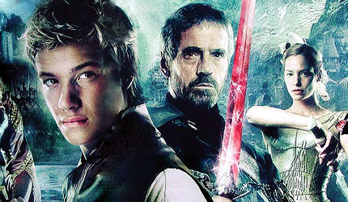

Eragon, cậu bé nông dân mười lăm tuổi, bàng hoàng khi phát hiện một hòn đã xanh ngời sáng trong rặng núi Spine. Eragon đem hòn đá về trang trại của người cậu ruột, nơi nó sống từ tấm bé cùng cậu Garrow, mợ Marian và con trai của ông bà là Roran. Không ai biết cha của Eragon là ai, mẹ nó là Serena bỏ con lại cho anh và chị dâu ngay sau khi sinh và ra đi biệt tích.
Khi hòn đá rạn nứt và một rồng con xuất hiện, Eragon chạm tay vào con rồng nhỏ, một dấu hiệu màu bạc bỗng hiện trên bàn tay nó, đồng thời cậu bé cũng phát hiện một mối giao cảm tâm linh kì lạ giữa nó và con rồng. Hiện tượng đó làm Eragon trở thành một trong những kỵ sĩ rồng trong truyền thuyết.
Các kỵ sĩ rồng được thành lập từ nhiều ngàn năm trước, ngay sau cuộc chiến lớn giữa loài rồng và các thần tiên, hầu để tránh mọi khổ đau gây ra bởi những hành động thù dịch giữa hai loài. Các kỵ sĩ trở thành những người gìn giữ hòa bình, thầy giáo, thầy thuốc, triết gia và là những pháp sư vĩ đại nhất – vì mối liên hệ với rồng làm các vị đó trở thành những thuật sĩ tài ba. Dưới sự dẫn dắt và bảo vệ của họ, vùng đất này thực sự sống trong một thời đại hoàng kim.
Khi loài người đến Alagaesia, họ cũng hòa đồng trong trật tự tốt đẹp của nơi này. Nhưng sau nhiều năm thanh bình hạnh phúc, loài Urgals tàn bạo hiếu chiến đã giết chết con rồng của một kỵ sĩ trẻ tuổi tên là Galbatorix. Điên loạn vì sự mất mát đó và vì các kỵ sĩ tiền bối đã từ chối cung cấp cho hắn ta một con rồng khác, Galbatorix nuôi lòng căm thù, quyết tâm mưu đồ tiêu diệt và lật đổ bề trên.
Galbatorix bắt trộm một con rồng, đặt tên là Shruikan. Với thần chú của tà phái, Galbatorix ép buộc con rồng phục vụ hắn và khuyến dụ thêm mười ba kỵ sĩ trẻ khác theo hắn. Với sự tiếp tay của nhóm Thập Tam Phản Đồ này, Galbatorix ra tay trừ khử các kỵ sĩ tiền bối, giết chết vị thủ lãnh là kỵ sĩ Vrael, rồi tự phong là vua trên toàn cõi Alagaesia. Nhưng Galbatorix chỉ thành công một phần trong mưu đồ này, vì thần tiên và bộ tộc người lùn cương quyết giữ nền tự trị trong những nơi ở bí mật của họ. Đồng thời một số thuộc loài người thành lập một đất nước độc lập tại miền nam Alagaesia, tên nước là Surda. Tình trạng đối đầu ngấm ngầm giữa những phe phái này kéo dài suốt hai mươi năm, trước đó là tám mươi năm liên miên xung đột tàn bạo trong cuộc chiến tiêu diệt các kỵ sĩ.
Trong tình hình chính trị rối ren đó, Eragon lo sợ sẽ vướng vào những nguy hiểm chết người – vì ai cũng biết tên bạo chúa Galbatorix sẵn sàng thủ tiêu ngay kỵ sĩ rồng nào không chịu tuyên thệ trung thành với lão. Vì vậy, Eragon giấu gia đình, âm thầm nuôi cô rồng cái. Trong thời gian này, cậu đặt tên cho cô nàng là Saphira, một cái tên Eragon đã được nghe qua lời của ông già Brom, một ông lão kể chuyện sống trong làng Carvahall.
Không bao lâu sau, người anh họ của Eragon là Roran rời trang trại đi kiếm việc làm để có tiền cưới Katrina, con gái một chủ hàng thịt.
Vừa khi Saphira đứng cao hơn Eragon, hai kẻ lạ trông như những con bọ hung, với tên gọi là Ra’zac tới Carvahall để truy lùng hòn đá, mà sự thật là cái trứng rồng đã nở ra Saphira. Khiếp đảm, Saphira bắt cóc Eragon bay lên rặng núi Spine. Eragon cố thuyết phục Saphira đưa mình trở về. Nhưng khi về tới nơi, ruộng vườn nhà cửa đã bị tụi Ra’zac tàn phá tan hoang. Eragon tìm thấy cậu Garrow hấp hối trong đống đổ nát với những vết thương khủng khiếp vì bị hai tên Ra’zac tra khảo dã man.
Sau cái chết của người cậu ruột, Eragon thề sẽ báo thù. Vì ông già Brom đã biết đến sự hiện diện của cô rồng Saphira. nên Eragon đồng ý để ông cùng đi trong cuộc truy lùng Ra’zac. Ông trao cho Eragon thanh kiếm Zar’roc, chủ nhân cũ của vũ khí này là một kỵ sĩ. Nhưng ông Brom không tiết lộ cho Eragon biết, từ đâu ông ta có được thanh bảo kiếm này.
Trong chuyến đi, Eragon đã học hỏi được nhiều điều từ ông già Brom, kể cả kiếm thuật và phép thuật.
Hai ông cháu mất dấu những tên Ra’zac và họ đến thành Teirm, vì ông Brom tin rằng người bạn cũ của ông, Jeod, có thể giúp tìm ra hang ổ của hai kẻ sát nhân kia.
Tại Teirm, bà lang kỳ dị Angela đoán hậu vận cho Eragon. Bà ta cho biết trong tương lai, sẽ có những quyền lực to lớn xung đột nhau để tranh giành việc chế ngự số phận nó và Eragon sẽ có một tình yêu lãng mạn với một tiểu thư đài các, dòng dõi quý tộc; bà ta cũng cho nó biết, sẽ có ngày cậu rời xa Alagaesia mãi mãi và trong gia đình sẽ có một kẻ phản bội. Con mèo ma Solembum của bà phù thủy kiêm thầy bói Angela cũng cho Eragon mấy lời khuyên nhủ. Sau đó, Eragon, ông già Brom cùng Saphira lên đường tới Dras-Leona, hy vọng sẽ tìm thấy tụi Ra’zac tại nơi này.
Lúc này ông Brom tiết lộ cho Eragon biết: ông chính là một thành viên của Varden, một tổ chức quân cách mạng, hiến thân phục vụ chính nghĩa “lật đổ bạo chúa Galbatorix”. Vì vậy ông mới phải ẩn dật tại làng của Eragon, chờ đợi ngày xuất hiện của một kỵ sĩ rồng. Ông cũng cho nó biết, hai mươi năm trước, chính ông và ông bạn Jeod đã trộm trứng Saphira của Galbatorix. Trong dịp này ông đã giết Morzan, tên phản đồ đầu tiên và cuối cùng. Tuy nhiên trong cung điện của Galbatorix vẫn còn hai trứng rồng nữa chưa nở.
Gần tới Dras-Leona, lọt ổ phục kích của Ra’zac, ông già Brom bị thương nặng, trong khi cố bảo vệ cho Eragon. Một thanh niên bí mật tên Murtagh đã đánh đuổi tụi Ra’zac giải cứu Eragon. Đêm hôm sau, trước khi trút hơi thở cuối cùng, ông Brom thú nhận ông đã từng là một kỵ sĩ rồng và con rồng bị sát hại của ông cũng tên là Saphira. Eragon an táng ông già trong một ngôi mộ bằng sa thạch. Saphira đã biến ngôi mộ đá thành một ngôi mộ bằng kim cương.
Không còn ông Brom, Eragon và Saphira quyết định gia nhập Varden. Không may Eragon lại bị bắt tại thành Gil’ead và bị dẫn giải tới Tà thần Durza, cánh tay mặt của vua Galbatorix. Một lần nữa, Murtagh lại ra tay giải thoát Eragon. Một tù nhân khác cũng được Murtagh cứu khỏi nhà tù trong cơn hôn mê, đó là nàng tiên Arya. Từ đó Eragon và Murtagh trở thành đôi bạn thân thiết.
Xuyên qua tư tưởng, Arya cho Eragon biết chính nàng đã luân chuyển trứng rồng giữa thần tiên và quân cách mạng Varden, hy vọng trứng sẽ nở ra một rồng con. Nhưng trong chuyến đi cuối cùng nàng bị Tà Thần mai phục, nên đành phải dùng phép thuật phóng trứng rồng thật xa. Đó là lý do Eragon đã nhặt được trứng của Saphira. Bị thương trầm trọng, Arya cần phải có thuốc trị của phe Varden. Nang chuyền những hình ảnh bằng tâm trí để Eragon biết đường tìm đến quân cách mạng.
Eragon và bạn đồng hành vượt gần bốn trăm dặm trong tám ngày, nhưng bất ngờ bị một toán quân quái thú Urgal chặn đường trên đỉnh núi Beor. Không muốn tới với quân cách mạng Varden, Murtagh bắt buộc phải cho Eragon biết sự thật: anh ta là con trai tên phản đồ Morzan. Tuy nhiên vì phản đối những hành động của cha, Murtagh đã trốn khỏi sự bảo hộ của vua Galbatorix, đi tìm một số phận riêng. Murtagh cho Eragon xem vết thẹo dài trên lưng, vết thẹo do chính Morzan phóng thanh kiếm Ra’zoc vào con trai khi anh còn là một đứa trẻ. Do đó, Eragon mới biết thanh kiếm mình đang sử dụng đã có lần thuộc về cha của Murtagh. Đó chính là Morzan - kẻ phản bội đồng môn, để đi theo Galbatorix và chính tay kẻ đó đã từng tàn sát rất nhiều kỵ sĩ huynh đệ và tiền bối.
Ngay trước khi quân Urgal tràn ngập bủa vây, Eragon và Murtagh được quân cách mạng Varden cứu thoát.
Đến lúc đó Eragon mới biết căn cứ của Varden nằm trong lòng Farthen Dur, một hang núi rộng mười dặm, cao mười dặm. Nơi đây cũng chính là thủ phủ Tronjheim, quê hương của tộc người lùn.
Sau khi vào bên trong lòng núi, Eragon được đưa tới trước Ajihad, thủ lãnh của Varden; còn Murtagh bị tống vào tù, vì lý do lý lịch mờ ám. Eragon được Ajihad cho biết: phe Varden, thần tiên, người lùn đều đã nhất trí, khi có một kỵ sĩ mới xuất hiện, anh ta hoặc cô ta sẽ được ông già Brom huấn luyện bước đầu, sau đó sẽ được gửi tới thần tiên để hoàn tất phần huấn luyện. Bây giờ Eragon phải quyết định có tham dự khóa huấn luyện hay không.
Lần lượt, Eragon được yết kiến Hrothgar, vua của người lùn; gặp Nusuada, con gái của thủ lãnh Ajihad; bị cặp anh em sinh đôi thử thách và ngay khi Arya bình phục, Eragon đã phải thử tài kiếm thuật cùng nàng. Cậu cũng gặp lại bà lang Angela và mèo ma Solembum. Eragon và Saphira cũng chúc phúc cho một đứa trẻ mồ côi trong nhóm người theo phe Varden.
Việc Eragon lưu trú tại đây đã gây nên cuộc tranh luận vì tin đoàn quân Urgals đang tiến qua những địa đạo của người lùn. Trong cuộc hỗn chiến sau đó, Eragon bị tách khỏi Saphira, phải chiến đấu một mình với Tà Thần Durza. Mạnh hơn một người bình thường gấp bội, Tà Thần dễ dàng hạ Eragon và xả một đường gươm dài trên lưng nó, suốt từ bờ vai tới tận hông. Vết sẹo giống hệt vết thẹo trên lưng Murtagh. Nhưng ngay lúc đó, Saphira và nàng tiên Arya đập vỡ mái trần - một tảng ngọc xanh hình ngôi sao với đường kính hai mươi mét – làm Durza bối rối, để Eragon kịp đưa mũi kiếm đâm suốt qua tim Tà Thần. Giải thoát khỏi lời nguyền của tà thần, lũ quái Urgals ngưng tấn công, quay đầu chạy ngược trở ra dưới những đường hầm.
Sau trận chiến, trong cơn hôn mê, Eragon được giao tiếp bằng thần giao cách cảm với một nhân vật tự xưng là Togira Ikonoka - Người Tàn Mà Không Phế. Ông ta hứa sẽ trả lời tất cả những thắc mắc của Eragon và thúc giục nó hãy tới tìm ông tại Ellesméra, xứ sở của thần tiên.
Tỉnh dậy, Eragon phát hiện, dù đã được bà Angela tận tình cứu chữa, trên lưng cậu vẫn còn nguyên vết thẹo rất lớn, giống như vết thẹo của Murtagh. Eragon khiếp đảm nhận ra, nó đã may mắn trong đường tơ kẽ tóc khi giết được tà thần. Như vậy Eragon cần phải được rèn luyện nhiều hơn nữa.
Cuối phần một, Eragon quyết định sẽ đi tìm Togira Ikonoka để thọ giáo ông. Vì định mệnh u ám đã cận kề, âm thanh đầu tiên báo hiệu chiến tranh đã vang rền trên đất nước mà thời gian đã quá cấp bách rồi. Eragon sẽ phải tiến tới, đương đầu với kẻ thù thực sự của mình: Bạo chúa Galbatorix.